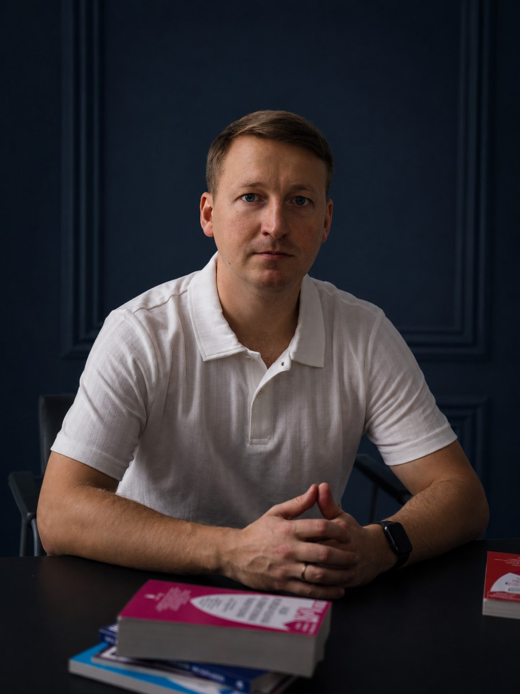

Защита ваших прав и интересов
Профессиональная юридическая помощь по уголовным, гражданским и семейным делам. Представительство в суде и защита на стадии предварительного расследования.
Связаться в TelegramПозвонить
Услуги
Помощь на разных этапах правового спора — от анализа ситуации и подготовки документов до защиты и представительства в суде.
Уголовные дела
Защита на стадии проверки, предварительного расследования и судебного разбирательства.
Гражданские и семейные споры
Подготовка правовой позиции, документов и представительство интересов в суде.
Представительство в суде
Участие в судебных заседаниях и защита прав и законных интересов доверителя.
Споры с государственными органами
Правовой анализ ситуации, подготовка обращений и представительство.
Правовые документы
Иски, жалобы, претензии, ходатайства и иные юридически значимые документы.
Юридические консультации
Анализ ситуации и документов, возможные правовые решения и дальнейшая стратегия.
Стоимость услуг
Окончательная стоимость ведения уголовных и гражданских дел определяется с учётом сложности дела и объёма необходимой работы.

Обо мне
Адвокат с опытом работы в надзорных органах, более 6 лет юридической практики. Реестровый номер в Едином государственном реестре адвокатов — 58/1005.
До получения статуса адвоката проходил службу в органах прокуратуры, в том числе на руководящих должностях. Знаю систему изнутри и понимаю, как выстраивается позиция обвинения.
Регулярно повышаю квалификацию.
Оказываю помощь по следующим направлениям:
- защита по уголовным делам
- гражданские и семейные споры
- представительство в суде
- споры с государственными органами
- подготовка правовых документов
На первичной консультации:
- изучаю вашу ситуацию и документы
- предлагаю возможные правовые решения
- определяю стоимость услуг в зависимости от сложности дела
Вы оплачиваете только конкретно оказанную работу.
Все сведения, полученные от вас, составляют адвокатскую тайну в соответствии со ст. 8 ФЗ №63 «Об адвокатской деятельности и адвокатуре РФ».
Почему обращаются ко мне
Опыт
Более 6 лет юридической практики и опыт работы в надзорных органах.
Индивидуальный подход
Каждая ситуация анализируется с учётом конкретных обстоятельств и документов.
Конфиденциальность
Сведения, полученные от доверителя, защищены адвокатской тайной.
Отзывы клиентов
Отзывы клиентов можно проверить непосредственно в профиле адвоката на Яндексе.